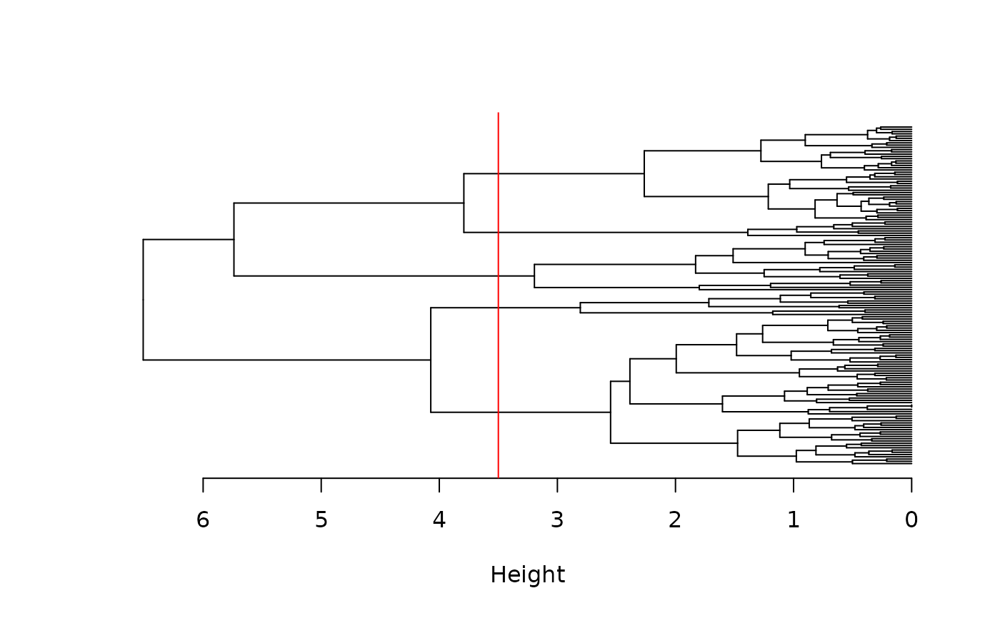
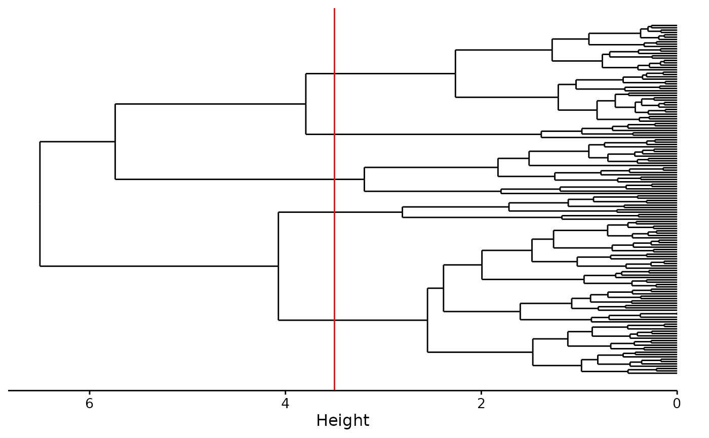
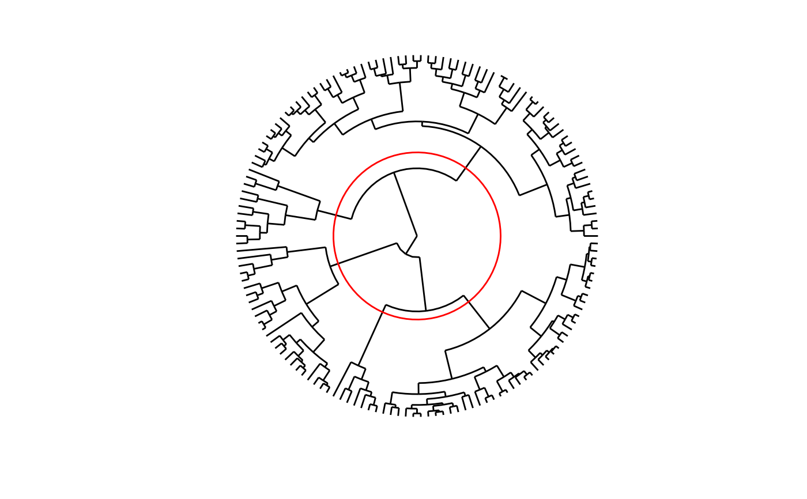

Hierarchical Clustering Analysis
cluster.RdHierarchical clustering is an agglomerative method that uses a dissimilarity matrix to group individuals. It is represented by a dendrogram that can be cut at a certain level to form the final clusters.
cluster(x, ...) # S3 method for default cluster(x, ...) # S3 method for dist cluster(x, method = "complete", fun = NULL, ...) # S3 method for Cluster str(object, max.level = NA, digits.d = 3L, ...) # S3 method for Cluster labels(object, ...) # S3 method for Cluster nobs(object, ...) # S3 method for Cluster predict(object, k = NULL, h = NULL, ...) # S3 method for Cluster augment(x, data, k = NULL, h = NULL, ...) # S3 method for Cluster plot( x, y, labels = TRUE, hang = -1, check = TRUE, type = "vertical", lab = "Height", ... ) # S3 method for Cluster autoplot( object, labels = TRUE, type = "vertical", circ.text.size = 3, theme = theme_sciviews(), xlab = "", ylab = "Height", ... ) # S3 method for Cluster chart(data, ..., type = NULL, env = parent.frame())
Arguments
| x | A |
|---|---|
| ... | Further arguments for the methods (see their respective manpages). |
| method | The agglomeration method used. |
| fun | The function to use to do the calculation. By default, it is
|
| object | A |
| max.level | The maximum level to present. |
| digits.d | The number of digits to print. |
| k | The number of clusters to get. |
| h | The height where the dendrogram should be cut (give either |
| data | The original dataset |
| y | Do not use it. |
| labels | Should we show the labels ( |
| hang | The fraction of the plot height at which labels should hang below (by default, -1 meaning labels are all placed at the extreme of the plot). |
| check | The validity of the |
| type | The type of dendrogram, by default, |
| lab | The label of the y axis (vertical) or x axis (horizontal), by
default |
| circ.text.size | Size of the text for a circular dendrogram |
| theme | The ggplot2 theme to use, by default, it is |
| xlab | Label of the x axis (nothing by default) |
| ylab | Label of the y axis, by default |
| env | The environment where to evaluate formulas. If you don't understand this, it means you should not touch it! |
Value
A Cluster object inheriting from hclust. Specific methods are: str() (compact display of the object content), labels() (get the labels for the observations), nobs() (number of observations), predict() (get the clusters, given a cutting level), augment() (add the groups to the original data frame or tibble), plot() (create a dendrogram as base R plot), autoplot() (create a dendrogram as a ggplot2), and chart() (create a dendrogram as a chart variant of a ggplot2).
See also
Examples
SciViews::R iris <- read("iris", package = "datasets") iris_num <- select(iris, -species) # Only numeric columns from iris # Cluster the 150 flowers iris_dis <- dissimilarity(iris_num, method = "euclidean", scale = TRUE) (iris_clust <- cluster(iris_dis, method = "complete"))#> #> Call: #> cluster.dist(x = iris_dis, method = "complete") #> #> Cluster method : complete #> Distance : euclidean #> Number of objects: 150 #>#> --[dendrogram w/ 2 branches and 150 members at h = 6.51] #> |--[dendrogram w/ 2 branches and 77 members at h = 4.07] #> | |--[dendrogram w/ 2 branches and 66 members at h = 2.55] #> | | |--[dendrogram w/ 2 branches and 22 members at h = 1.47] #> | | | |--[dendrogram w/ 2 branches and 10 members at h = 0.977] #> | | | | |--[dendrogram w/ 2 branches and 3 members at h = 0.502] #> | | | | | |--leaf "101" #> | | | | | `--[dendrogram w/ 2 branches and 2 members at h = 0.211] #> | | | | | |--leaf "137" #> | | | | | `--leaf "149" #> | | | | `--[dendrogram w/ 2 branches and 7 members at h = 0.81] #> | | | | |--[dendrogram w/ 2 branches and 4 members at h = 0.481] #> | | | | | |--leaf "145" #> | | | | | `--[dendrogram w/ 2 branches and 3 members at h = 0.362] #> | | | | | |--leaf "141" #> | | | | | `--[dendrogram w/ 2 branches and 2 members at h = 0.166] #> | | | | | |--leaf "121" #> | | | | | `--leaf "144" #> | | | | `--[dendrogram w/ 2 branches and 3 members at h = 0.551] #> | | | | |--leaf "125" #> | | | | `--[dendrogram w/ 2 branches and 2 members at h = 0.427] #> | | | | |--leaf "111" #> | | | | `--leaf "116" #> | | | `--[dendrogram w/ 2 branches and 12 members at h = 1.12] #> | | | |--[dendrogram w/ 2 branches and 5 members at h = 0.678] #> | | | | |--[dendrogram w/ 2 branches and 2 members at h = 0.338] #> | | | | | |--leaf "142" #> | | | | | `--leaf "146" #> | | | | `--[dendrogram w/ 2 branches and 3 members at h = 0.437] #> | | | | |--leaf "103" #> | | | | `--[dendrogram w/ 2 branches and 2 members at h = 0.265] #> | | | | |--leaf "113" #> | | | | `--leaf "140" #> | | | `--[dendrogram w/ 2 branches and 7 members at h = 0.867] #> | | | |--[dendrogram w/ 2 branches and 4 members at h = 0.481] #> | | | | |--leaf "104" #> | | | | `--[dendrogram w/ 2 branches and 3 members at h = 0.406] #> | | | | |--leaf "148" #> | | | | `--[dendrogram w/ 2 branches and 2 members at h = 0.259] #> | | | | |--leaf "117" #> | | | | `--leaf "138" #> | | | `--[dendrogram w/ 2 branches and 3 members at h = 0.505] #> | | | |--leaf "105" #> | | | `--[dendrogram w/ 2 branches and 2 members at h = 0.131] #> | | | |--leaf "129" #> | | | `--leaf "133" #> | | `--[dendrogram w/ 2 branches and 44 members at h = 2.39] #> | | |--[dendrogram w/ 2 branches and 15 members at h = 1.6] #> | | | |--[dendrogram w/ 2 branches and 5 members at h = 0.876] #> | | | | |--leaf "114" #> | | | | `--[dendrogram w/ 2 branches and 4 members at h = 0.695] #> | | | | |--leaf "115" #> | | | | `--[dendrogram w/ 2 branches and 3 members at h = 0.376] #> | | | | |--leaf "122" #> | | | | `--[dendrogram w/ 2 branches and 2 members at h = 0] #> | | | | |--leaf "102" #> | | | | `--leaf "143" #> | | | `--[dendrogram w/ 2 branches and 10 members at h = 1.08] #> | | | |--[dendrogram w/ 2 branches and 3 members at h = 0.805] #> | | | | |--leaf "109" #> | | | | `--[dendrogram w/ 2 branches and 2 members at h = 0.528] #> | | | | |--leaf "73" #> | | | | `--leaf "147" #> | | | `--[dendrogram w/ 2 branches and 7 members at h = 0.884] #> | | | |--[dendrogram w/ 2 branches and 2 members at h = 0.465] #> | | | | |--leaf "84" #> | | | | `--leaf "135" #> | | | `--[dendrogram w/ 2 branches and 5 members at h = 0.707] #> | | | |--[dendrogram w/ 2 branches and 2 members at h = 0.372] #> | | | | |--leaf "55" #> | | | | `--leaf "134" #> | | | `--[dendrogram w/ 2 branches and 3 members at h = 0.457] #> | | | |--leaf "112" #> | | | `--[dendrogram w/ 2 branches and 2 members at h = 0.265] #> | | | |--leaf "124" #> | | | `--leaf "127" #> | | `--[dendrogram w/ 2 branches and 29 members at h = 1.99] #> | | |--[dendrogram w/ 2 branches and 8 members at h = 0.951] #> | | | |--[dendrogram w/ 2 branches and 4 members at h = 0.461] #> | | | | |--[dendrogram w/ 2 branches and 2 members at h = 0.215] #> | | | | | |--leaf "66" #> | | | | | `--leaf "87" #> | | | | `--[dendrogram w/ 2 branches and 2 members at h = 0.312] #> | | | | |--leaf "51" #> | | | | `--leaf "53" #> | | | `--[dendrogram w/ 2 branches and 4 members at h = 0.628] #> | | | |--leaf "78" #> | | | `--[dendrogram w/ 2 branches and 3 members at h = 0.566] #> | | | |--leaf "77" #> | | | `--[dendrogram w/ 2 branches and 2 members at h = 0.288] #> | | | |--leaf "59" #> | | | `--leaf "76" #> | | `--[dendrogram w/ 2 branches and 21 members at h = 1.48] #> | | |--[dendrogram w/ 2 branches and 7 members at h = 1.02] #> | | | |--[dendrogram w/ 2 branches and 4 members at h = 0.522] #> | | | | |--leaf "71" #> | | | | `--[dendrogram w/ 2 branches and 3 members at h = 0.267] #> | | | | |--leaf "150" #> | | | | `--[dendrogram w/ 2 branches and 2 members at h = 0.133] #> | | | | |--leaf "128" #> | | | | `--leaf "139" #> | | | `--[dendrogram w/ 2 branches and 3 members at h = 0.679] #> | | | |--leaf "86" #> | | | `--[dendrogram w/ 2 branches and 2 members at h = 0.312] #> | | | |--leaf "52" #> | | | `--leaf "57" #> | | `--[dendrogram w/ 2 branches and 14 members at h = 1.26] #> | | |--[dendrogram w/ 2 branches and 6 members at h = 0.663] #> | | | |--[dendrogram w/ 2 branches and 2 members at h = 0.242] #> | | | | |--leaf "67" #> | | | | `--leaf "85" #> | | | `--[dendrogram w/ 2 branches and 4 members at h = 0.447] #> | | | |--leaf "65" #> | | | `--[dendrogram w/ 2 branches and 3 members at h = 0.265] #> | | | |--leaf "97" #> | | | `--[dendrogram w/ 2 branches and 2 members at h = 0.187] #> | | | |--leaf "89" #> | | | `--leaf "96" #> | | `--[dendrogram w/ 2 branches and 8 members at h = 0.71] #> | | |--[dendrogram w/ 2 branches and 4 members at h = 0.457] #> | | | |--leaf "62" #> | | | `--[dendrogram w/ 2 branches and 3 members at h = 0.296] #> | | | |--leaf "92" #> | | | `--[dendrogram w/ 2 branches and 2 members at h = 0.211] #> | | | |--leaf "64" #> | | | `--leaf "79" #> | | `--[dendrogram w/ 2 branches and 4 members at h = 0.502] #> | | |--[dendrogram w/ 2 branches and 2 members at h = 0.242] #> | | | |--leaf "75" #> | | | `--leaf "98" #> | | `--[dendrogram w/ 2 branches and 2 members at h = 0.418] #> | | |--leaf "72" #> | | `--leaf "74" #> | `--[dendrogram w/ 2 branches and 11 members at h = 2.81] #> | |--[dendrogram w/ 2 branches and 3 members at h = 1.18] #> | | |--leaf "110" #> | | `--[dendrogram w/ 2 branches and 2 members at h = 0.395] #> | | |--leaf "118" #> | | `--leaf "132" #> | `--[dendrogram w/ 2 branches and 8 members at h = 1.72] #> | |--[dendrogram w/ 2 branches and 2 members at h = 0.615] #> | | |--leaf "119" #> | | `--leaf "123" #> | `--[dendrogram w/ 2 branches and 6 members at h = 1.11] #> | |--[dendrogram w/ 2 branches and 2 members at h = 0.541] #> | | |--leaf "126" #> | | `--leaf "130" #> | `--[dendrogram w/ 2 branches and 4 members at h = 0.854] #> | |--[dendrogram w/ 2 branches and 2 members at h = 0.312] #> | | |--leaf "108" #> | | `--leaf "131" #> | `--[dendrogram w/ 2 branches and 2 members at h = 0.405] #> | |--leaf "106" #> | `--leaf "136" #> `--[dendrogram w/ 2 branches and 73 members at h = 5.74] #> |--[dendrogram w/ 2 branches and 24 members at h = 3.19] #> | |--[dendrogram w/ 2 branches and 5 members at h = 1.8] #> | | |--leaf "42" #> | | `--[dendrogram w/ 2 branches and 4 members at h = 1.19] #> | | |--leaf "61" #> | | `--[dendrogram w/ 2 branches and 3 members at h = 0.521] #> | | |--leaf "99" #> | | `--[dendrogram w/ 2 branches and 2 members at h = 0.259] #> | | |--leaf "58" #> | | `--leaf "94" #> | `--[dendrogram w/ 2 branches and 19 members at h = 1.83] #> | |--[dendrogram w/ 2 branches and 7 members at h = 1.25] #> | | |--[dendrogram w/ 2 branches and 3 members at h = 0.607] #> | | | |--leaf "88" #> | | | `--[dendrogram w/ 2 branches and 2 members at h = 0.372] #> | | | |--leaf "69" #> | | | `--leaf "120" #> | | `--[dendrogram w/ 2 branches and 4 members at h = 0.778] #> | | |--leaf "63" #> | | `--[dendrogram w/ 2 branches and 3 members at h = 0.486] #> | | |--leaf "54" #> | | `--[dendrogram w/ 2 branches and 2 members at h = 0.143] #> | | |--leaf "81" #> | | `--leaf "82" #> | `--[dendrogram w/ 2 branches and 12 members at h = 1.51] #> | |--leaf "107" #> | `--[dendrogram w/ 2 branches and 11 members at h = 0.902] #> | |--[dendrogram w/ 2 branches and 7 members at h = 0.707] #> | | |--[dendrogram w/ 2 branches and 3 members at h = 0.406] #> | | | |--leaf "91" #> | | | `--[dendrogram w/ 2 branches and 2 members at h = 0.294] #> | | | |--leaf "70" #> | | | `--leaf "90" #> | | `--[dendrogram w/ 2 branches and 4 members at h = 0.433] #> | | |--leaf "80" #> | | `--[dendrogram w/ 2 branches and 3 members at h = 0.353] #> | | |--leaf "68" #> | | `--[dendrogram w/ 2 branches and 2 members at h = 0.236] #> | | |--leaf "83" #> | | `--leaf "93" #> | `--[dendrogram w/ 2 branches and 4 members at h = 0.742] #> | |--leaf "60" #> | `--[dendrogram w/ 2 branches and 3 members at h = 0.31] #> | |--leaf "95" #> | `--[dendrogram w/ 2 branches and 2 members at h = 0.227] #> | |--leaf "56" #> | `--leaf "100" #> `--[dendrogram w/ 2 branches and 49 members at h = 3.79] #> |--[dendrogram w/ 2 branches and 7 members at h = 1.39] #> | |--leaf "16" #> | `--[dendrogram w/ 2 branches and 6 members at h = 0.973] #> | |--[dendrogram w/ 2 branches and 2 members at h = 0.452] #> | | |--leaf "33" #> | | `--leaf "34" #> | `--[dendrogram w/ 2 branches and 4 members at h = 0.66] #> | |--leaf "15" #> | `--[dendrogram w/ 2 branches and 3 members at h = 0.502] #> | |--leaf "19" #> | `--[dendrogram w/ 2 branches and 2 members at h = 0.227] #> | |--leaf "6" #> | `--leaf "17" #> `--[dendrogram w/ 2 branches and 42 members at h = 2.26] #> |--[dendrogram w/ 2 branches and 22 members at h = 1.21] #> | |--[dendrogram w/ 2 branches and 13 members at h = 0.818] #> | | |--[dendrogram w/ 2 branches and 3 members at h = 0.386] #> | | | |--leaf "37" #> | | | `--[dendrogram w/ 2 branches and 2 members at h = 0.286] #> | | | |--leaf "21" #> | | | `--leaf "32" #> | | `--[dendrogram w/ 2 branches and 10 members at h = 0.632] #> | | |--[dendrogram w/ 2 branches and 8 members at h = 0.428] #> | | | |--[dendrogram w/ 2 branches and 3 members at h = 0.294] #> | | | | |--leaf "27" #> | | | | `--[dendrogram w/ 2 branches and 2 members at h = 0.121] #> | | | | |--leaf "8" #> | | | | `--leaf "40" #> | | | `--[dendrogram w/ 2 branches and 5 members at h = 0.362] #> | | | |--[dendrogram w/ 2 branches and 3 members at h = 0.187] #> | | | | |--leaf "41" #> | | | | `--[dendrogram w/ 2 branches and 2 members at h = 0.131] #> | | | | |--leaf "1" #> | | | | `--leaf "18" #> | | | `--[dendrogram w/ 2 branches and 2 members at h = 0.236] #> | | | |--leaf "28" #> | | | `--leaf "29" #> | | `--[dendrogram w/ 2 branches and 2 members at h = 0.496] #> | | |--leaf "24" #> | | `--leaf "44" #> | `--[dendrogram w/ 2 branches and 9 members at h = 1.03] #> | |--[dendrogram w/ 2 branches and 3 members at h = 0.534] #> | | |--leaf "23" #> | | `--[dendrogram w/ 2 branches and 2 members at h = 0.178] #> | | |--leaf "5" #> | | `--leaf "38" #> | `--[dendrogram w/ 2 branches and 6 members at h = 0.551] #> | |--[dendrogram w/ 2 branches and 2 members at h = 0.121] #> | | |--leaf "11" #> | | `--leaf "49" #> | `--[dendrogram w/ 2 branches and 4 members at h = 0.353] #> | |--leaf "22" #> | `--[dendrogram w/ 2 branches and 3 members at h = 0.313] #> | |--leaf "45" #> | `--[dendrogram w/ 2 branches and 2 members at h = 0.143] #> | |--leaf "20" #> | `--leaf "47" #> `--[dendrogram w/ 2 branches and 20 members at h = 1.28] #> |--[dendrogram w/ 2 branches and 10 members at h = 0.764] #> | |--[dendrogram w/ 2 branches and 5 members at h = 0.4] #> | | |--leaf "43" #> | | `--[dendrogram w/ 2 branches and 4 members at h = 0.283] #> | | |--leaf "4" #> | | `--[dendrogram w/ 2 branches and 3 members at h = 0.17] #> | | |--leaf "30" #> | | `--[dendrogram w/ 2 branches and 2 members at h = 0.133] #> | | |--leaf "3" #> | | `--leaf "48" #> | `--[dendrogram w/ 2 branches and 5 members at h = 0.688] #> | |--[dendrogram w/ 2 branches and 2 members at h = 0.256] #> | | |--leaf "36" #> | | `--leaf "50" #> | `--[dendrogram w/ 2 branches and 3 members at h = 0.395] #> | |--leaf "7" #> | `--[dendrogram w/ 2 branches and 2 members at h = 0.17] #> | |--leaf "12" #> | `--leaf "25" #> `--[dendrogram w/ 2 branches and 10 members at h = 0.901] #> |--[dendrogram w/ 2 branches and 3 members at h = 0.337] #> | |--leaf "9" #> | `--[dendrogram w/ 2 branches and 2 members at h = 0.211] #> | |--leaf "14" #> | `--leaf "39" #> `--[dendrogram w/ 2 branches and 7 members at h = 0.373] #> |--[dendrogram w/ 2 branches and 3 members at h = 0.187] #> | |--leaf "31" #> | `--[dendrogram w/ 2 branches and 2 members at h = 0.131] #> | |--leaf "10" #> | `--leaf "35" #> `--[dendrogram w/ 2 branches and 4 members at h = 0.297] #> |--[dendrogram w/ 2 branches and 2 members at h = 0.166] #> | |--leaf "2" #> | `--leaf "26" #> `--[dendrogram w/ 2 branches and 2 members at h = 0.262] #> |--leaf "13" #> `--leaf "46"#> --[dendrogram w/ 2 branches and 150 members at h = 6.51] #> |--[dendrogram w/ 2 branches and 77 members at h = 4.07] #> | |--[dendrogram w/ 2 branches and 66 members at h = 2.55] #> | | |--[dendrogram w/ 2 branches and 22 members at h = 1.47] .. #> | | `--[dendrogram w/ 2 branches and 44 members at h = 2.39] .. #> | `--[dendrogram w/ 2 branches and 11 members at h = 2.81] #> | |--[dendrogram w/ 2 branches and 3 members at h = 1.18] .. #> | `--[dendrogram w/ 2 branches and 8 members at h = 1.72] .. #> `--[dendrogram w/ 2 branches and 73 members at h = 5.74] #> |--[dendrogram w/ 2 branches and 24 members at h = 3.19] #> | |--[dendrogram w/ 2 branches and 5 members at h = 1.8] .. #> | `--[dendrogram w/ 2 branches and 19 members at h = 1.83] .. #> `--[dendrogram w/ 2 branches and 49 members at h = 3.79] #> |--[dendrogram w/ 2 branches and 7 members at h = 1.39] .. #> `--[dendrogram w/ 2 branches and 42 members at h = 2.26] ..# Horizontal dendrogram and without labels chart$horizontal(iris_clust, labels = FALSE) + geom_dendroline(h = 3.5, color = "red")# Circular dendrogram with labels chart$circ(iris_clust, circ.text.size = 3) + # Abbreviate type and change size geom_dendroline(h = 3.5, color = "red")#> 1 2 3 4 5 6 7 8 9 10 11 12 13 14 15 16 17 18 19 20 #> 1 1 1 1 1 2 1 1 1 1 1 1 1 1 2 2 2 1 2 1 #> 21 22 23 24 25 26 27 28 29 30 31 32 33 34 35 36 37 38 39 40 #> 1 1 1 1 1 1 1 1 1 1 1 1 2 2 1 1 1 1 1 1 #> 41 42 43 44 45 46 47 48 49 50 51 52 53 54 55 56 57 58 59 60 #> 1 3 1 1 1 1 1 1 1 1 4 4 4 3 4 3 4 3 4 3 #> 61 62 63 64 65 66 67 68 69 70 71 72 73 74 75 76 77 78 79 80 #> 3 4 3 4 4 4 4 3 3 3 4 4 4 4 4 4 4 4 4 3 #> 81 82 83 84 85 86 87 88 89 90 91 92 93 94 95 96 97 98 99 100 #> 3 3 3 4 4 4 4 3 4 3 3 4 3 3 3 4 4 4 3 3 #> 101 102 103 104 105 106 107 108 109 110 111 112 113 114 115 116 117 118 119 120 #> 4 4 4 4 4 5 3 5 4 5 4 4 4 4 4 4 4 5 5 3 #> 121 122 123 124 125 126 127 128 129 130 131 132 133 134 135 136 137 138 139 140 #> 4 4 5 4 4 5 4 4 4 5 5 5 4 4 4 5 4 4 4 4 #> 141 142 143 144 145 146 147 148 149 150 #> 4 4 4 4 4 4 4 4 4 4#> 1 2 3 4 5 6 7 8 9 10 11 12 13 14 15 16 17 18 19 20 #> 1 1 1 1 1 1 1 1 1 1 1 1 1 1 1 1 1 1 1 1 #> 21 22 23 24 25 26 27 28 29 30 31 32 33 34 35 36 37 38 39 40 #> 1 1 1 1 1 1 1 1 1 1 1 1 1 1 1 1 1 1 1 1 #> 41 42 43 44 45 46 47 48 49 50 51 52 53 54 55 56 57 58 59 60 #> 1 2 1 1 1 1 1 1 1 1 3 3 3 2 3 2 3 2 3 2 #> 61 62 63 64 65 66 67 68 69 70 71 72 73 74 75 76 77 78 79 80 #> 2 3 2 3 3 3 3 2 2 2 3 3 3 3 3 3 3 3 3 2 #> 81 82 83 84 85 86 87 88 89 90 91 92 93 94 95 96 97 98 99 100 #> 2 2 2 3 3 3 3 2 3 2 2 3 2 2 2 3 3 3 2 2 #> 101 102 103 104 105 106 107 108 109 110 111 112 113 114 115 116 117 118 119 120 #> 3 3 3 3 3 4 2 4 3 4 3 3 3 3 3 3 3 4 4 2 #> 121 122 123 124 125 126 127 128 129 130 131 132 133 134 135 136 137 138 139 140 #> 3 3 4 3 3 4 3 3 3 4 4 4 3 3 3 4 3 3 3 3 #> 141 142 143 144 145 146 147 148 149 150 #> 3 3 3 3 3 3 3 3 3 3#> # A tibble: 150 × 6 #> sepal_length sepal_width petal_length petal_width species .fitted #> <dbl> <dbl> <dbl> <dbl> <fct> <int> #> 1 5.1 3.5 1.4 0.2 setosa 1 #> 2 4.9 3 1.4 0.2 setosa 1 #> 3 4.7 3.2 1.3 0.2 setosa 1 #> 4 4.6 3.1 1.5 0.2 setosa 1 #> 5 5 3.6 1.4 0.2 setosa 1 #> 6 5.4 3.9 1.7 0.4 setosa 1 #> 7 4.6 3.4 1.4 0.3 setosa 1 #> 8 5 3.4 1.5 0.2 setosa 1 #> 9 4.4 2.9 1.4 0.2 setosa 1 #> 10 4.9 3.1 1.5 0.1 setosa 1 #> # … with 140 more rows